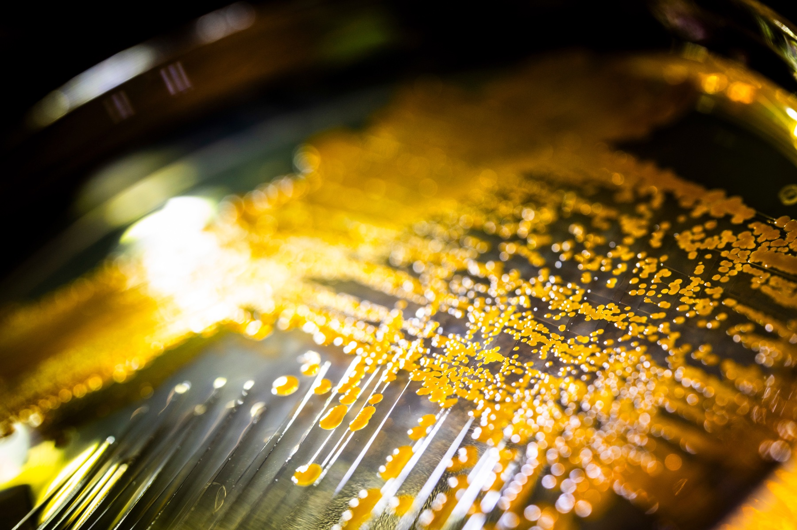
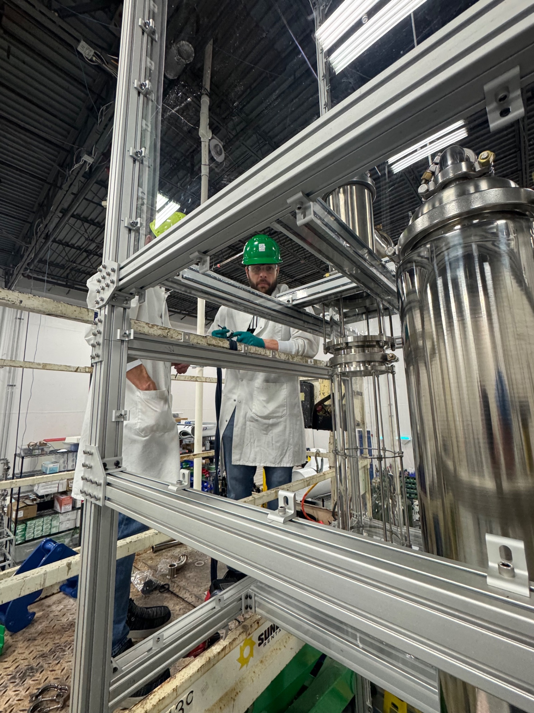
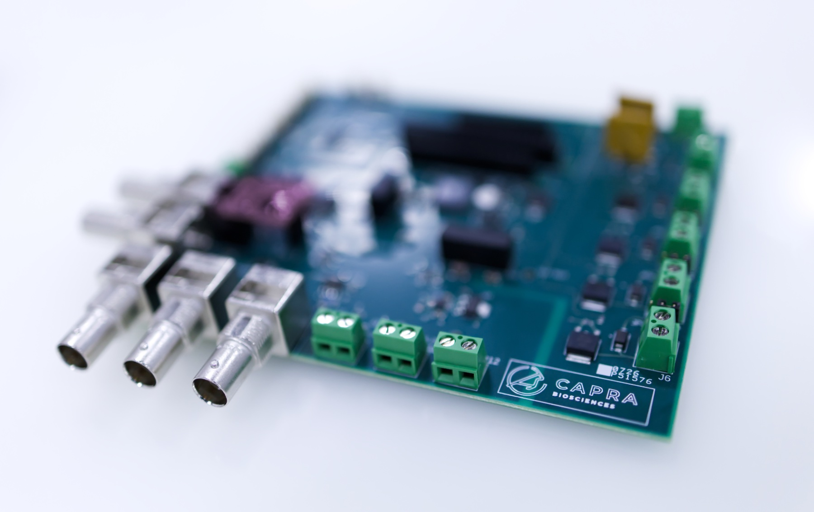
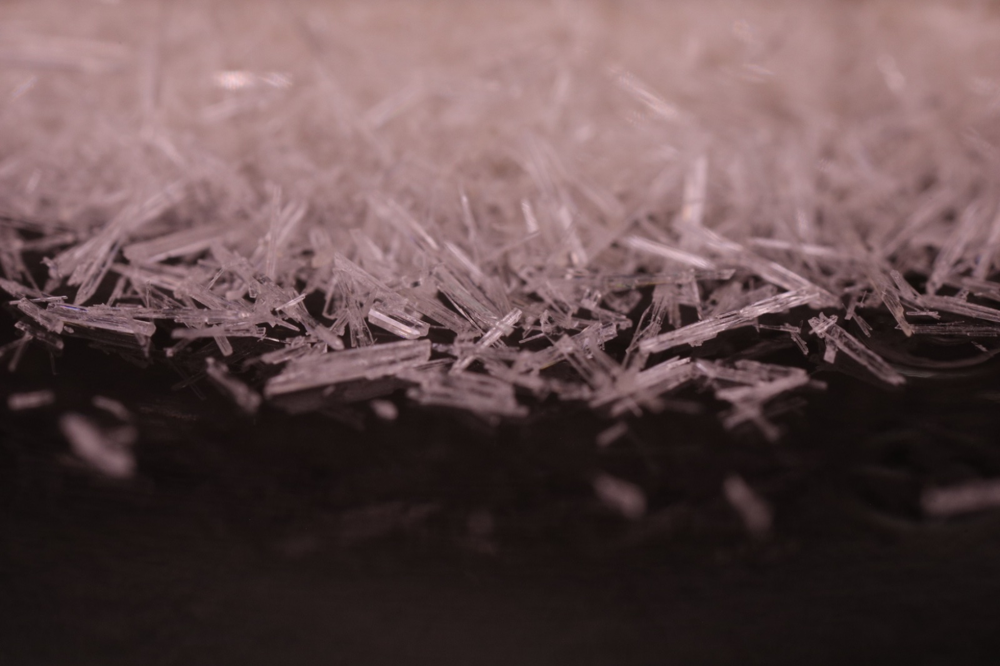

Four integrated layers — biology, hardware, process, and facility — designed to make a wide range of high-value small molecules on demand, at low capex, in a single building. AI is woven through every layer of the stack: from strain engineering to recursive process improvement to facility-wide control systems.
At our Sterling strain engineering lab, we design and continuously improve microbial host organisms tuned to each product target. AI-driven design loops shape pathway selection, edit prioritization, and screening, so each generation of strain gets faster and higher-yielding. The hosts are metabolically flexible, consuming feedstocks from agricultural and food-waste byproducts to locally sourced carbon and refined sugars.

Our proprietary reactor combines biosynthesis with on-skid continuous product separation. Product is partitioned away from the culture media and processed downstream while the cells stay in the reactor and keep producing — we've run reactors as long as 100 days straight, dramatically more efficient than conventional fermentation at a fraction of the capex. Integrated sensors continuously feed real-time data into recursive, AI-driven self-improvement loops that tighten reactor performance with every cycle.

As product is continuously partitioned away from the reactor, it flows directly into integrated downstream systems we develop in-house at Capra, taking it all the way to high-purity product. Custom control systems run on top, and AI continuously improves our processes with every cycle. The goal is a lights-out facility that minimizes human intervention, freeing operators to focus on the steps that need real judgment.

In our Sterling, Virginia facility, a 6,500 ft² production floor sits inside a 10,000 ft² building, with production, downstream, packaging, and QC under one roof, alongside our R&D lab. The modular floor is designed to match capacity to demand, so production can be reallocated as the market shifts, without the long downtime that conventional plants require. Modular, multi-product, nimble factories are the future of manufacturing in America.

We evaluate new programs continuously. Bring us a strain and we'll tell you whether the platform is a fit and how fast we can deliver your first kilogram.